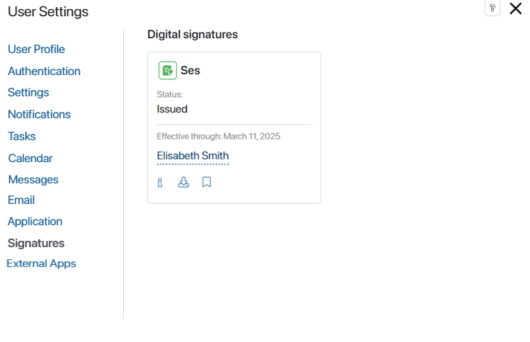

Each employee in the company has their own user profile. It contains their contact information, date of birth, and photo. In your profile, you can configure personal notification and task display settings, link your email to the system’s mail client, download the BRIX application for your computer, and more.
You can access your profile from any page in the system. To do this, click on your name or profile picture in the upper right corner of the screen. Choose from the following menu options:
- Settings. This option takes you to your profile and settings. Here you can update your personal information and configure personalized preferences. All settings are organized into tabs: User Profile, Authentication, Settings, Notifications, Tasks, Calendar, Document Management, Email, Application, Signatures, and External Apps.
- Help. This is a link to the Help Center where you can find detailed descriptions of all system settings.
- Tech Support. This option provides access to the Technical Support chat in the cloud version of BRIX for users in the Administrators group. In BRIX On-Premises, you can use the Tech Support button on the main page to access an external portal where support is provided for your company.
- Sign Out. Sign out of your BRIX account.
- This is your schedule compliance.
- Applications. This takes you to information about versions of the BRIX application for your computer and smartphone.
The button is not displayed if the system administrator has disabled the BRIX application installation option in the company settings.
Let’s take a closer look at the options available in the user profile settings.
User Profile
On this tab, you will find your personal information: name, photo, date of birth, and contact information. You can also add your messenger accounts.
Authentication
This tab appears if a custom OAuth2 authentication module is configured, allowing users to register and log in to BRIX using external services, for example, social networks.
Here you can link your BRIX account to an account from an external service, so you can sign in using its login and password. To do this, click the Bind button.
Please note that you can link only one external account to your BRIX account and vice versa.
If your account is bound to a third-party service, you can use it to log in to BRIX. To do this, click Use another sign-in method. In the opened window, select the desired service and type its login and password.

Unbind an account
Please note that you can link only one external account to your BRIX account.
To replace one login service with another:
- Click Delete next to the bound service icon.
- Select another available service and click Bind.
Important: if your account was created using a third-party service, i.e. you did not register directly in the system, then you can log in to BRIX only via this service. In this case, the Delete button will not be displayed and you will not be able to replace one third-party service with another.
Settings
On this tab, you can select the interface language, set the date format and the first day of the week, and specify your time zone.
- Interface language. The following languages are available by default:
- English for SaaS.
- English, Spanish, and German for On-Premises.
If the system administrator has set additional locales, they will appear in the list and you can select them.
- First day of the week. Specify the day of the week that will be displayed as the first day in calendar. You can choose either Monday or Sunday.
- Date format. Select the format used to display dates.
- Time zone. Change your time zone, for example, during a business trip or when working remotely. If your time zone differs from the company’s, you can quickly select the value from your PC. To do this, click Set time zone using settings of the current device. When tasks are assigned, the time will be automatically adjusted according to your time zone.
- Business calendar. The field displays the business calendar that the system administrator has assigned to you. The specified working hours are automatically applied when assigning tasks. You can also view your planned schedule changes by using the
 button.
button.
Notifications
You can enable or disable pop-up notifications about new messages for chats and channels, as well as manage push notifications in the browser. Read more in the Personal notification settings article.
Tasks
On this tab, you can manage the display of CRM tasks, enable sending notifications about new tasks to email, as well as configure task reminders, and hide the project tasks group.
- Show CRM tasks separately from others. Enable this option to add the CRM Tasks section to the Tasks workspace. It will include tasks of the Call, Meeting, Webinar, and Email types assigned to you that are associated with deals, leads, and companies.
The counter in the Tasks > CRM Tasks shows the number of unfinished CRM tasks. Specify which tasks to include in the count:
- Earlier. All unfinished tasks assigned to you before the current date.
- Today. All tasks assigned for the current date. This option is selected by default.
- Tomorrow. Tasks that need to be done until the next day after the current date.
- Week. Tasks that need to be done within seven days from the current date.
- Later. Tasks that need to be done within eight or more days from the current date.
- Send notifications about new tasks by email. Enable this option to receive notifications about new tasks to the email address specified in the User Profile tab. The notification will include task details and the link to quickly open it in the system. By default, notification settings set up by the administrator are applied.
To receive notifications about tasks assigned within a business process, the Notification option in the settings of the Task, Create App Item, or Edit App Item activity needs to be enabled.
- Approve by email. Enable sending approval tasks for files, document packages, and app items. You will be able to view the document and make a decision without opening the BRIX interface. Please note that this option will only work if the administrator has connected the company’s business email. This email address will be used to send notifications about new tasks assigned to you.
- Notify that tasks deadlines are close. Enable this option to get reminders about tasks with deadlines. Specify how long before the deadline you want to receive a notification to the #Activity stream.
- Hide projects tasks. You can hide the Project tasks group in the Tasks workspace for convenience if you don’t work with this type of tasks. You can also display the group if it’s hidden in the system administration settings.
Calendar
You can set up notifications about events created in your personal calendar. They will be shown in the #Activity stream or sent to your Email.
- Event reminders. Select this option to receive notifications about upcoming events.
- Send notifications about events by email. Enable this option to receive notifications about events and their changes at the email address specified on the User Profile tab. The notification will contain all the details of the upcoming event. By default, the notification settings configured by the administrator are applied.
- Remind. Specify the amount of time before the event that you want to receive the reminder.
Document Management
On this tab the following settings are available:
- Hide approval and information tasks with a set deadline from the calendar to make it easier to read.
- Show a certain number of items in the search bar of the Document categorization workspace. This option is disabled by default so that the page loads faster.

Messages
On this tab, you can enable the object-based activity stream to view all correspondence from the activity stream of a specific task, file, or app item directly in the Messages workspace. This is particularly useful, for example, if you frequently deal with inquiries or requests. For more information on working with such an activity stream, read the Object-based activity stream article.
Tick the option to activate the object-based activity stream. Messages will be grouped by the following categories: chats, objects, and favorites. If the option is disabled, all messages are displayed in the #Activity stream in chronological order, from new to old.
The list of excluded objects includes apps, processes, and tasks whose messages are not shown in your object-based activity stream. To receive messages about them again, hover over the object and click on the appeared recycle bin icon.
On this tab, users can connect their email to the built-in BRIX email client. Incoming and outgoing emails will be displayed in the Email workspace. You will be able to contact clients and partners from the system interface. The entire history of interaction will be saved.
You can configure integration with several email services: Gmail, Yahoo, Outlook, or Office365. You can also connect an email with a corporate domain using the SMTP and IMAP protocols.
When you connect your email, you can enable additional options:
- Email Notifications. Enable pop-up notifications of incoming emails for BRIX on your computer and in the mobile app.
- Configure Email usage in business processes. Allow emails to be sent from your address during processes using the Send Personal Email activity.
Read more about this in the Connect an email to an account article.
Application
You can work in BRIX via the PC application suitable for various versions of Windows, macOS, and Linux operating systems.
You can also work in the system using your smartphone by downloading the app from the App Store or Google Play. You can quickly log in to your account using a QR code.
The Application tab is not displayed if the system administrator has disabled the BRIX application installation option.
Signatures
On this tab, you can see your digital signature certificates. You can:
 View certificate data.
View certificate data.- Download a certificate.
- Select default certificate for signing documents.

External Apps
The system administrator can configure an external app in a module that connects an external service to the company. Users will be able to provide the service with access to BRIX protected resources using the OAuth2 authentication protocol. For example, this way, you can authenticate to an external website using the login and password from your BRIX account or create app items using the Web API.
When you allow a service to access BRIX resources and fulfill a data request, an entry of this is saved in your user profile under the External Apps tab.
The tab shows the name of the external app and the date of the last connection between the service and BRIX. You can terminate the connection so that resources are no longer transferred to the external service. To do this, click the Revoke access button next to the entry.
Found a typo? Select it and press Ctrl+Enter to send us feedback